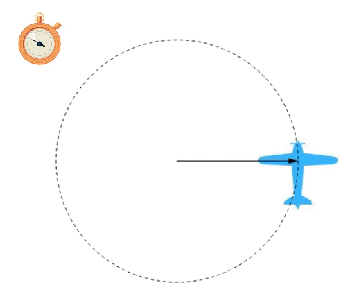
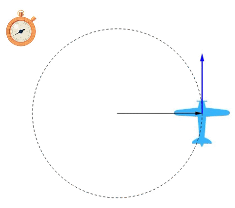

Aula1-7: Movimento círcular uniformemente variado (MCUV)
Chamamos de movimento uniformemente variado o movimento circular que é regido por uma velocidade angular que varia uniformemente. Ou seja, a taxa de variação desta velocidade, que é chamada aceleração angular, neste contexto, mantem-se constante.
Aceleração angular média
|
 |
É a grandeza que indica como a velocidade angular varia com o tempo. A equação que nos permite calculá-la é apresentada abaixo: Teremos como unidade de medida para aceleração angular: |
Aceleração tangencial
|
 |
É a grandeza que indica como a velcidade tangencial se altera com o tempo. É uma aceleração que se projeta tangencialmente à trajetória. Na imagem ao lado, está representada pelo vetor azul. Para calculá-la, aplicamos a seguinte fórmula:
|
Equação horária da velocidade
É a equação que nos fornece a velocidade angular em função do tempo.
Dedução:
Se dividirmos a equação horaria da velocidade pelo raio, obteremos:
Fórmula final:
Equação horária do espaço angular
É a equação que nos fornece a posição angular em função do tempo.
Dedução:
Divindo a equação horária do espaço pelo raio, obteremos:
Fórmula final:
Equação de torricelli angular
É a equação que nos fornece a velocidade em função do deslocamento.
Dedução
Se divirmos a equação de torricelli pelo raio, obteremos:
Fórmula final: